Agent-Based Modelling
Nick Malleson
nickmalleson.co.uk
With thanks to Alison Heppenstall, Andrew Crooks, and Andy Evans
These slides: http://surf.leeds.ac.uk/2017-10-ABM_AGILE_Summer_School.html
Why Agent-Based Modelling?
Social systems are complex
To understand how they behave, we need to capture the behaviour and interactions of the individual units that drive the system's behaviour
Aggregate techniques (e.g. regression) high lower-level detail
Agent-based models simulate the behaviour of indivual agents (e.g. people) and grow the phenomena of interest from the bottom-up.
Rough schedule for the day
13:30 - 15:00
Mostly lecture (with some practical work)
15:30 - 17:30
All practical work
Outline for the lecture
Why Simulate?
An Introduction to Agent-Based Modelling
What is an agent?
Pros & Cons of ABM
Complexity and Emergence
Interactions and Behaviour
Building Models
Conclusion
NetLogo
(Social) Simulation
The idea of simulation is realatively new - started in 1960s but didn't take of until 1990s
Early failures (e.g. Club of Rome, 1974) made it unattractive
Emergence of Artificial Intelligence ideas in 1990s rekindled enthusiasm in individual-level approaches (e.g. cellular-automata and ABM).
Uses of Simulation
Understanding
Experimentation: Can we gain new insights and understanding of the world?
Test theories in a virtual laboratory
AKA exploratory approaches
Prediction
If we can accurately replicate the dynamics of behaviour – we can predict what will happen in the future (?)
However, the further ahead we predict, the less accurate we become.
Also known as predictive approaches
Uses of Simulation
Substitute
If we can simulate the expertise of a doctor (expert systems), does this remove the need for the human expert?

Training
Creation of programs/environments to train experts e.g. virtual car and flight simulators
Discovery and Formalisation
Discover new processes and knowledge about the phenomenon we are simulating through experimentation
Formalise this into new theories
Uses of Simulation
Entertainment

Introduction to ABM
Aggregate v.s. Individual
'Traditional' modelling methods work at an aggregate level, from the top-down
E.g. Regression, spatial interaction modelling, location-allocation, etc.
Aggregate models work very well in some situations
Homogeneous individuals
Interactions not important
Very large systems (e.g. pressure-volume gas relationship)
Introduction to ABM
Aggregate v.s. Individual
But they miss some important things:
Low-level dynamics, i.e. “smoothing out” (Batty, 2005)
Interactions and emergence (more on these later)
Unsuitable for modelling complex systems

Introduction to ABM
Aggregate v.s. Individual
Systems are driven by individuals
(cars, people, ants, trees, whatever)
Bottom-up modelling
An alternative approach to modelling
Rather than controlling from the top, try to represent the individuals
Account for system behaviour directly
Introduction to ABM
Autonomous, interacting agents
Represent individuals or groups
Situated in a virtual environment
Example application areas:
Business - stock markets, store location
Transport - modelling traffic
Ecology - modelling animal populations
Crime - modelling offender behaviour
...
Introduction to ABM
Example: Wolf-Sheep predation

What is an agent?
Some common characteristics
Heterogeneous
Reactive
Bounded Rationality
Interactive
Mobile
Learning / adaption
Appeal of ABM
A natural way to think about social systems
Individuals drive the system
Program behavioural theories directly, no need to approximate group behaviour
Modelling emergence
"A phenomenon is emergent when it can only be described and characterised using terms and measurements that are inappropriate or impossible to apply to the component units" - Gilbert (2004) page 3.
Impossible (?) to capture using aggregate models

Appeal of ABM
Can include physical space and social processes
Designed at abstract level: easy to change scale
E.g. scale up from village to city by adding more agents and changing the environment
Bridge between verbal theories and mathematical models
Appeal of ABM
Can produce a dynamic history of the evolution of the system
Disadvantages of ABM

(Actually, he played with his trains in the end).
Known unknowns
We don’t know exactly what someone will do.
So we guess - e.g. there is a 30% chance of choosing the truck
Models that use randomness like this are probabilistic
The need to run many times to ensure robust results
Example: Wolf-Sheep model
Disadvantages of ABM
Computationally expensive
Complicated agent decisions
Lots of decisions!
Multiple model runs (robustness)
Modelling "soft" human factors
Benefit that we can include complex psychology
But this is really hard!
Potential to over-complicate
Need to think carefully about what to include
ABM: Summary
XXXX Summarise stuff so far, before doing NetLogo
Don't panic! At times you will find NetLogo programming frustrating, but there is lots of help available.
Outline
Software Tools / Platforms
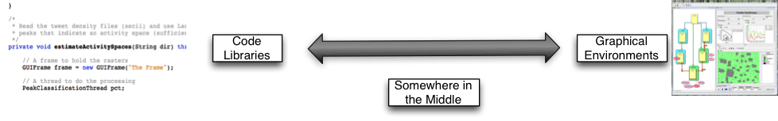What are they?
Pieces of software to help people build models
Wide range of tools
Computer code ('libraries')
Entire graphical environment
Somewhere in the middle
... and somewhere else ...
Computer code ('libraries')

Researchers write software to perform useful functions:
Draw graphs
Visualise the model
Manage the schedule
Great for programmers
Less time spend worrying about admin, more time on modelling
Examples:
Graphical Environments

Entirely visual - no programming needed
Most useful for non-programmers
Examples
Somewhere in the middle
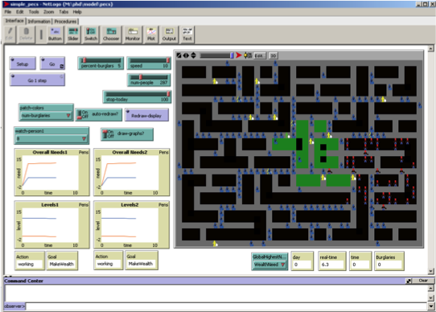Some code writing, some visual development
More powerful than purely visual tools, but easier to use.
Save time having to learn to do simple tasks and concentrate on model behaviour
e.g. NetLogo

Base on Star Logo.
Popular teaching tool
Designed to be used by children
But also powerful
Developed by The Center for Connected Learning (CCL) and Computer-Based Modeling at Northwestern University
Free!
Uses Java in the background
Multi platform; can be converted into applets (and embedded in websites)
Great for quickly putting a model together and thinking through ideas
Easy to: build; interact with models; extract data and create plots
Excellent documentation: http://ccl.northwestern.edu/netlogo/docs/
Example - Segregation (Schelling)
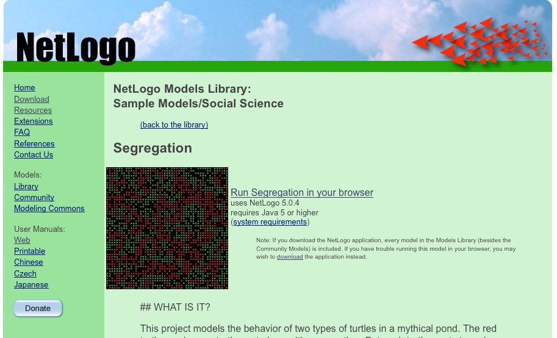Example - Ants
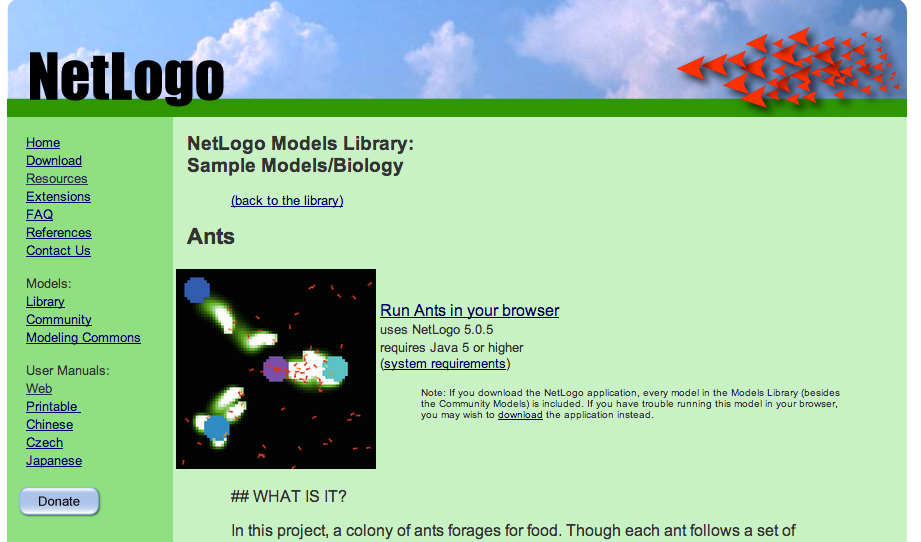The Program
NetLogo is "somewhere in the middle"
Graphical part (Interface) with sliders, graphs, buttons and a map
Scripting part (Procedures) which contains instructions (code)
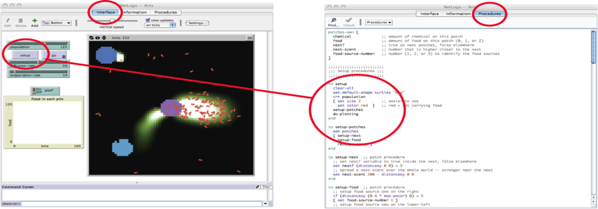The Interface
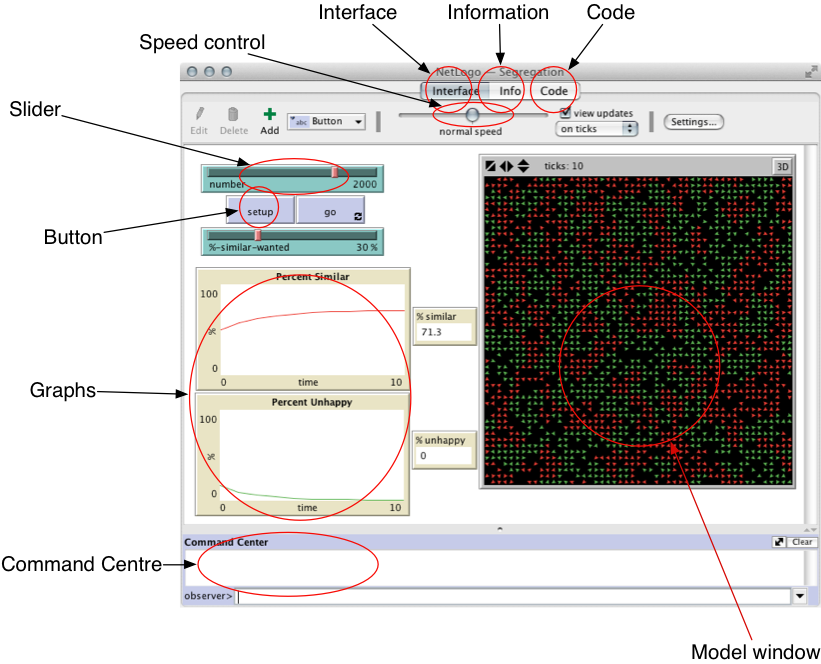Interface Components
| Switch | Slider | 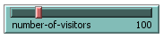 | |
| Button | 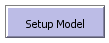 | Monitor | 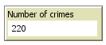 |
| Graph |  |
The Information Tab
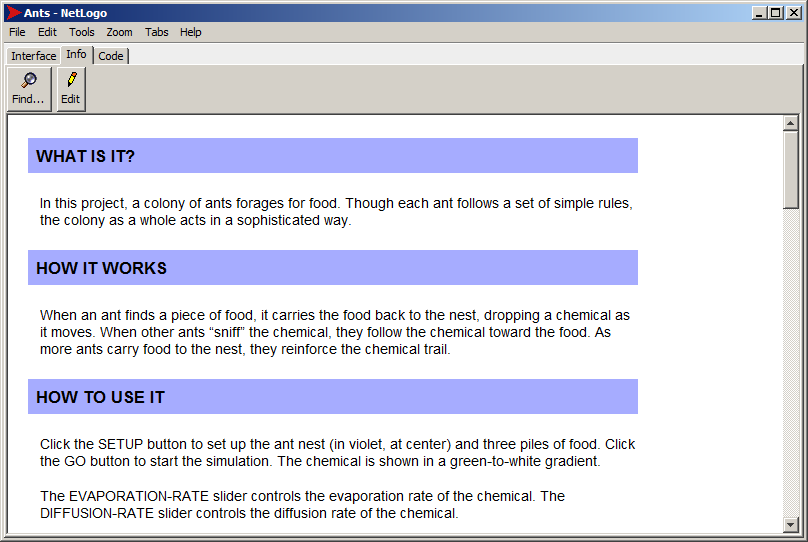The Program - Code
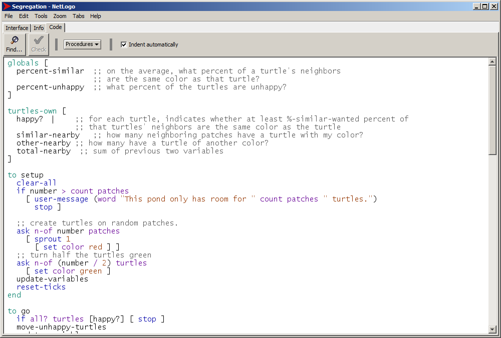Turtles, Patches and the Observer
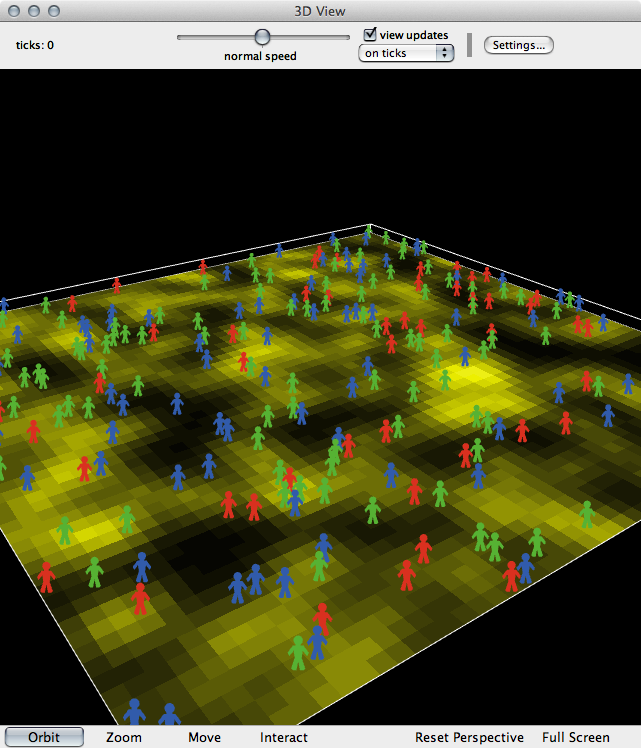There are two types of objects in NetLogo: turtles and patches.
Both are agents
They have rules that determine their behaviour
They can interact with other agents
Main differences:
Patches cannot move
You can create different types of 'turtle' (e.g. person, dog, cat, car, etc.)
Why turtles?
Turtles, Patches and the Observer
Also important: the observer
The 'god' of a model
Oversea everything that happens, give orders to turtles or patches, control other things like data input/output, virtual time, etc.
Variables
In programming, variables are a way of storing information. E.g.
my-name = "Nick"
seconds-per-minute = 60
pi = 3.142
infected = True
Variables can belong to different objects in the model.
Variables
Examples:
Turtle variables: e.g. name, age,
occupation, wealth, energy
Patch variables: e.g. height-above-sea,
amount-of-grain, building-security,
deprivation
Observer variables: e.g. total-wealth, weather,
time-of-day, pi
Different objects can have different variable values
NetLogo Commands
Commands are the way of telling NetLogo what we want it to do
Some examples
(don't worry, these will be explained properly in the first practical):
show "Hello World" | Prints something to the screen |
set my-age 13 | Sets the value of a variable |
ask turtles [ ... ] | Ask the turtles to do something |
ask turtles [ set color blue ] |
Asks the turtles to turn blue |
Commands are very well documented
Brackets
NetLogo uses both square [ ] and round ( ) brackets.
Round brackets are used to set the order of operations. E.g.:
2 + 3 × 4 = 14
(2 + 3) × 4 = 20
Square brackets are used to split up commands. E.g.:
ask turtles [ ... ]
the ask command
expects to find some more commands inside the brackets.
Contexts
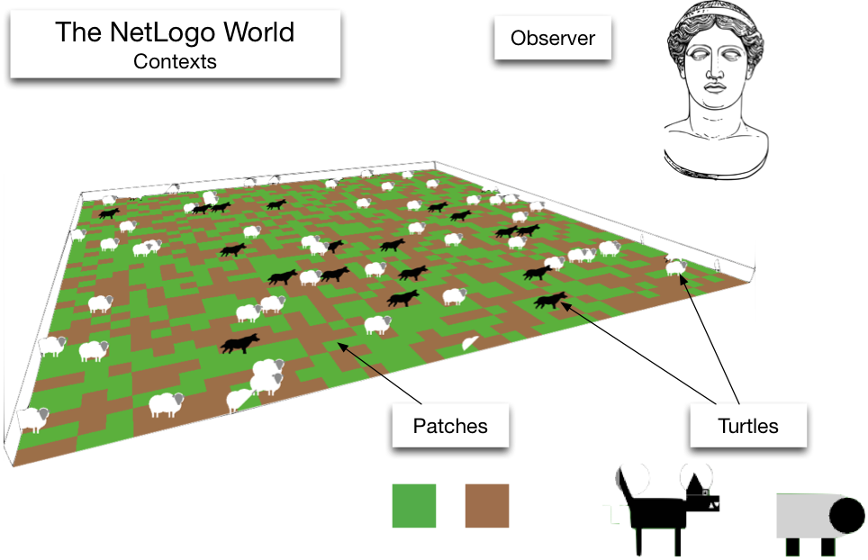Contexts are NetLogo's way of controlling where commands are sent.
There are three contexts:
- Observer
- Turtle
- Patch
Don't Panic: Lots of opportunity to understand these during the practicals..
Flow Control
Programs are recipes
And computers are really, really stupid cooks.
Programmers need to tell the computer exactly what to do, and in what order
Geek joke:
Q: How do you keep a programmer in the shower forever?
A: Give them a bottle of shampoo that says "lather, rinse, repeat".
Flow Control and Logic
Usually, NetLogo will run through your code, one line after the other.
But! Sometimes there are two or more possibilities for what to do next.
if statements are one example:
... start here ...
if ( age < 18 )
[ .. do something .. ]
if ( age > 18 )
[ .. do something else .. ]
... now continue ...
Finally: Writing Nice Code
Computers don't care what code looks like
But there are some good conventions that we can use to make our code easier to understand by humans
Indentation
New blocks of code should be indented (moved to the right)
E.g. the if statements on previous slide
White space
Different sections of code can be separated by lots of white space
Comments
Comments are special parts of code that NetLogo will ignore.
Anything after a ; is ignored.
Use comments to explain what your computer code does.
Indentation
Good
if age = 15 [
if count friends > 0 [
set happiness ( happiness + 1 )
]
if count friends > 5 [
set happiness ( happiness + 5 )
]
]
Bad
if age = 15 [
if count friends > 0 [
set happiness ( happiness + 1 )
]
if count friends > 5 [
set happiness ( happiness + 5 )
]
]
Whitespace
Good
if age = 15 [
if count friends > 0 [
set happiness ( happiness + 1 )
]
if count friends > 5 [
set happiness ( happiness + 5 )
]
]
Bad (well, not too bad, but ..)
if age = 15 [
if count friends > 0 [
set happiness ( happiness + 1 )
]
if count friends > 5 [
set happiness ( happiness + 5 )
]
]
Comments
Good
if age = 15 [
; This happens if the agent is 15 years old
if count friends > 0 [
; If at least 1 friend, then they're happy
set happiness ( happiness + 1 )
]
if count friends > 5 [
; If they have 5, then even more happy
set happiness ( happiness + 5 )
]
]
Bad
if age = 15 [
if count friends > 0 [
set happiness ( happiness + 1 )
]
if count friends > 5 [
set happiness ( happiness + 5 )
]
]
Summary: NetLogo
Resources
XXXX MAKE SMALL
Lots of good text books are available:
Railsback, Steven F., and Volker Grimm. Agent-Based and Individual-Based Modeling: A Practical Introduction. Princeton: Princeton University Press, 2011.
O’Sullivan, D., and G. L. Perry. Spatial Simulation: Exploring Pattern and Process. Chichester, UK: John Wiley & Sons, 2013.
Gilbert, N., and K. G. Troitzsch. Simulation for the Social Scientist. 2nd Edition. Milton Keynes, UK: Open University Press, 2005.
Heppenstall, Alison J, Andrew T Crooks, Linda M See, and Michael Batty, eds. Agent-Based Models of Geographical Systems. New York, NY: Springer, 2012.
And some nice, introductory papers:
Crooks, A. and Heppenstall, A.J (2012) Introduction to Agent-based modelling. In Heppenstall, A.J., Crooks, A.T., See, L.M. and Batty, M. (2012) Agent-based models of Geographical Systems. Springer: Dordrecht.
Macal, C. M., & North, M. J. (2010). Tutorial on agent-based modelling and simulation. Journal of Simulation, 4(3), 151–162
Bonabeau, E. (2002). Agent-based modeling: Methods and techniques for simulating human systems. Proceedings of the National Academy of Sciences, 99(90003), 7280–7287.
O’Sullivan & Haklay (2000), Agent-based models and individualism: is the world agent-based?, Environment and Planning A (32), 1409-25
Castle, C. J. E. and Crooks, A. T. (2006). Principles and concepts of agent-based modelling for developing geospatial simulations. UCL Working Papers Series, Paper 110, Centre For Advanced Spatial Analysis, University College London.
Undergraduate module (material online): GIS, Geocomputation and Geoplanning
Other Resources
Prof. Bruce Edmonds is one of the big names in agent-based modelling. He has two videos that provide excellent introductions to the methodology
A short one: http://www.youtube.com/watch?v=JANTkSa4hmA
A longer version from a conference presentation: http://www.youtube.com/watch?v=9nEPxb2J73w
Over To You ....
For the remainder of this session, work through the NetLogo Music Festival practicals here:
http://www.geog.leeds.ac.uk/courses/level3/geog3150/netlogo_festival
See if you can finish practical 3, but don't worry if you don't get that far (this would take undergraduates about 4-6 hours).
Agent-Based Modelling
Nick Malleson
nickmalleson.co.uk
With thanks to Alison Heppenstall, Andrew Crooks, and Andy Evans
These slides: http://surf.leeds.ac.uk/2017-10-ABM_AGILE_Summer_School.html